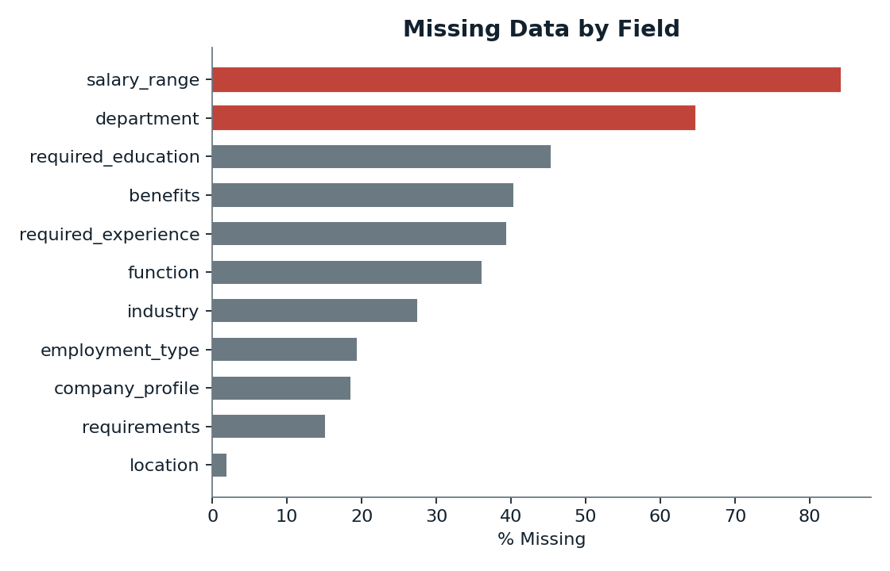
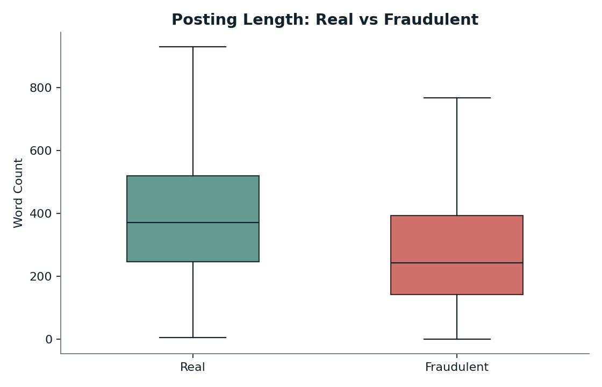
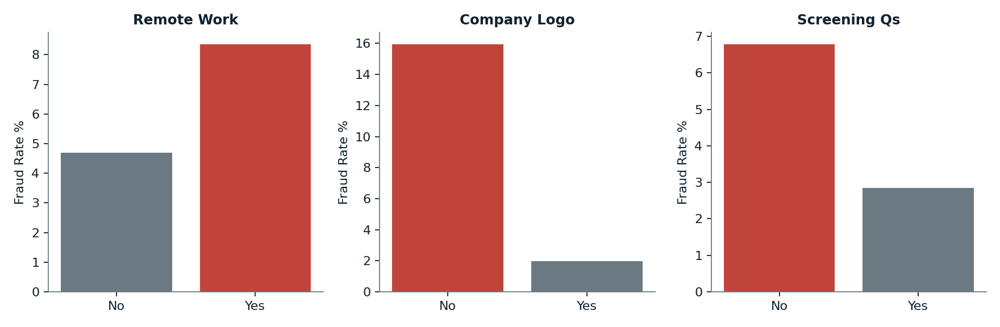
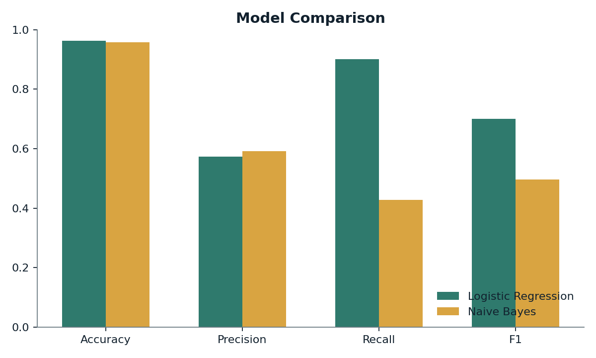
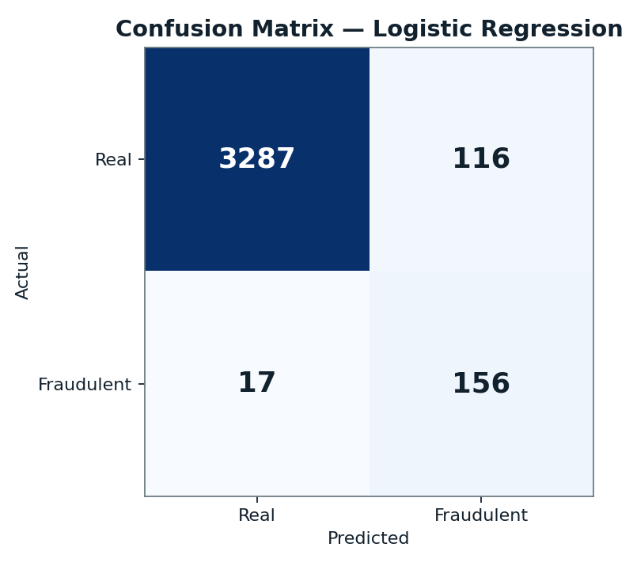
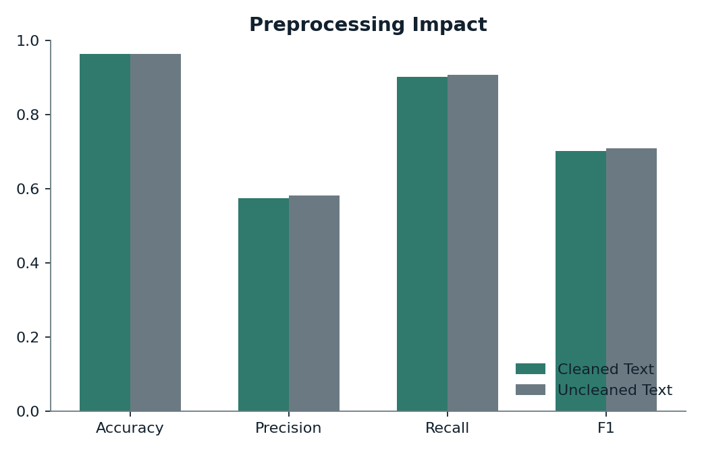

Machine Learning Project Report
Using TF-IDF text vectorization and classification models to detect fraudulent job postings
This project uses machine learning to identify fraudulent job postings by analyzing both the text content (job description, requirements, company profile) and structured metadata (employment type, required experience, etc.) of each posting. The dataset used is the EMSCAD "Real or Fake Job Posting" dataset.
Several columns had a large amount of missing data. The chart below shows the percentage of missing values for each column.

Based on this, the following cleaning steps were applied:
Fraudulent postings tend to be shorter than real ones, likely because scammers write vague, low-effort postings while real companies give more detail.

Median word count: 372 words (real) vs 243 words (fraudulent)
After training the model, we can look at which words push a prediction toward each class:
Top words signaling FRAUD:
Top words signaling REAL:
Besides text, a few simple yes/no fields turned out to be strong indicators of fraud:

Two classification models were trained on the combined text (TF-IDF) and structured features: Logistic Regression and Naive Bayes.
| Model | Accuracy | Precision | Recall | F1-Score |
|---|---|---|---|---|
| Logistic Regression | 0.963 | 0.574 | 0.902 | 0.701 |
| Naive Bayes | 0.958 | 0.592 | 0.428 | 0.497 |


To test whether manually cleaning the text (removing punctuation, HTML, lowercasing) actually improved results, the same model was also trained on the raw, uncleaned text.

The trained model was tested on two new job postings it had never seen before:
"Earn money from home! No experience needed, just sign up and start earning today. Send your info via email to get started. Unlimited earning potential!"
Prediction: FRAUDULENT (confidence: 99.27%)
"We are seeking a Software Engineer to join our growing team, collaborating with product managers and designers to build scalable solutions for our clients. Bachelor's degree required, 3+ years Python experience."
Prediction: REAL (fraud probability: 0.29%)
This project built a fraud detection system for job postings by combining TF-IDF text features with structured metadata. Logistic Regression outperformed Naive Bayes, mainly due to better recall. Simple structural signals (especially having a company logo) turned out to be strong predictors on their own. Text cleaning did not meaningfully improve results in this case, showing the importance of testing preprocessing choices rather than assuming they help. Overall, the model performs well at catching fraudulent postings, though it should be used to assist human reviewers rather than to automatically reject postings.